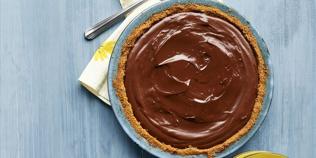

Homemade PeePooPie

Delicious homemade PeePooPie just like Mams used to make.
Ingredients
- fresh pee
- fresh poo
- vanilla extract
- crisco
- flour
- salt
- water
Steps
- Fold poo into pee, add a few drops of vanilla extract, fold a few more times taking care to not overmix and set aside
- Mix flour, crisco and a little salt in a bowl
- Add a little water at a time to the flour mixture and continue mixing until a shaggy dough forms
- etc.
- etc.